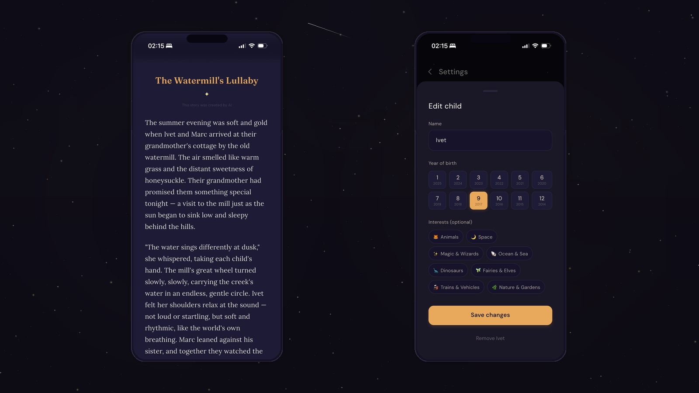
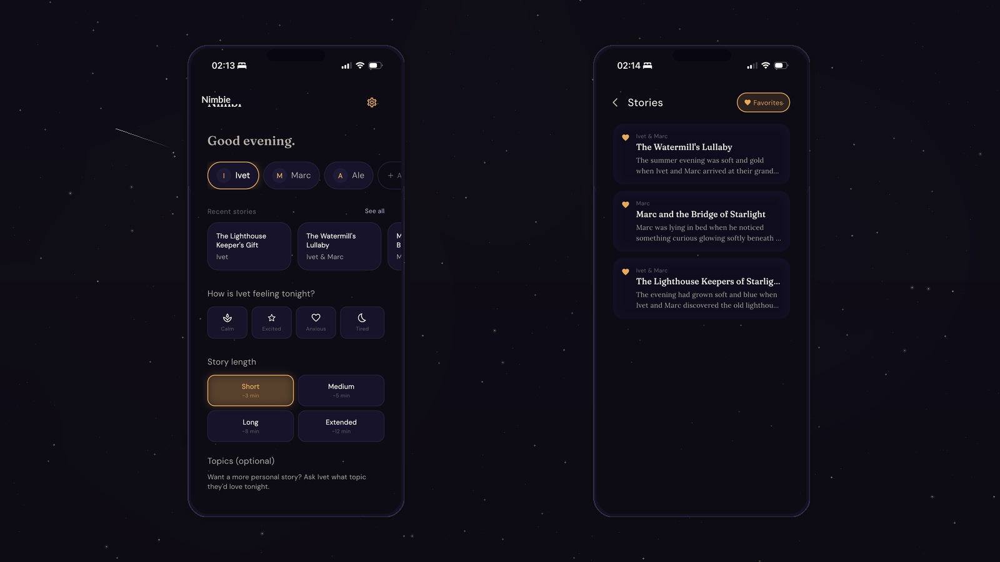
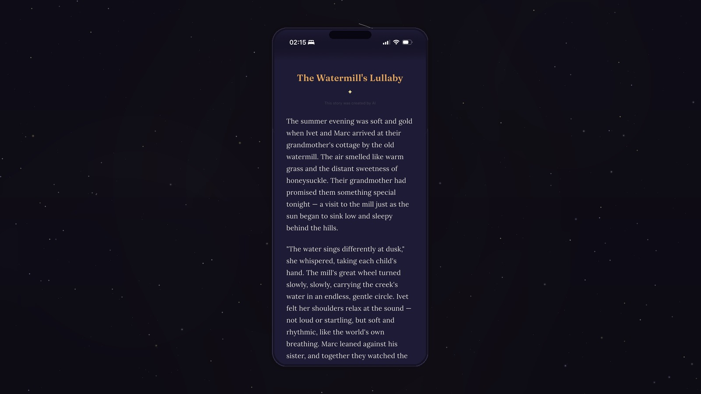

The problem
Every night, across millions of households, the same scene plays out: a tired parent, an overtired child, and the impossible ask — "Tell me a story." Parents who want to be present at bedtime often don't have the creative energy to invent something new. They repeat the same three books. The child, who wants something personal and fresh, sometimes gets a distracted, abbreviated bedtime.
The existing solutions make it worse. Streaming platforms are engineered for engagement, not sleep — too bright, too loud, designed to prevent stopping. Curated audio apps offer no personalization. General AI assistants require prompting knowledge and produce output that is unsafe, overstimulating, or both. None of them understand what bedtime actually is.
The real problem is not a content gap. It's a ritual gap.
Three insights that shaped the product
Before scoping a single feature, I talked to parents of children ages 3 to 7. Three things came back consistently.
Parents are the real users
Children can't operate an app at bedtime. The parent is managing the experience with one hand, in a dim room, with a sleepy child in their lap. Every UX decision had to serve the parent's constraints, not the child's engagement.
The competitor is exhaustion
The question isn't "will they pay?" It's "is this easier than doing nothing?" If Nimbi requires setup or decisions at 9pm, it loses to inertia. One tap to story for returning users was non-negotiable.
Personalization transforms the ritual
Children who heard a story featuring their name paid dramatically more attention and asked for it the next night. Even basic personalization transforms a generic product into a ritual object.

The anti-engagement principle
Most consumer apps optimize for engagement: more sessions, longer time-in-app, more return visits. Nimbi inverts this deliberately. A successful Nimbi session ends with a sleeping child. The app that achieves this most efficiently — and then disappears — wins.
This required active product decisions: no autoplay, no "one more story" loop, no streaks or badges, no push notifications by default. And a "That's enough for tonight" CTA that closes the session gracefully instead of nudging toward another one.
This is unusual in consumer product design, and it is a differentiator. Parents trust Nimbi precisely because it does not try to keep them using it. Designing against engagement in a space where every competitor is fighting for screen time is a genuine positioning choice, not a limitation.
Key product decisions
Full-screen reader with no chrome
The story reading experience is full-screen. Navigation bar, header, UI elements — all hidden after 3 seconds of inactivity. The story is the only thing on screen. Navigation chrome in a bedtime reading experience is like a stadium scoreboard in a meditation room. It breaks the spell. The save action reappears on any touch, and a "Save this story" prompt appears naturally at the story end — so discoverability is not sacrificed.

Mood-based calibration
Before generating, parents select the child's mood: Calm, Excited, Anxious, or Tired. This signal is passed to the AI to calibrate story tone and pacing. A child who is anxious needs a fundamentally different story than one who is bouncing off the walls. The mood selection is also a 2-second interaction that primes the parent to be emotionally present before the story begins — a small but meaningful ritual within the ritual.
Donations, not subscriptions
MVP monetization is voluntary donation only. No paywall, no free trial, no feature gates. The donation prompt appears only after a story is read to completion, framed with honest, zero-pressure language. The model is built to establish trust before requesting money. A parent who donates without being pressured is more likely to subscribe when features expand, because the relationship is built on gratitude rather than value extraction. Nimbi will never gate sleep behind a credit card.
Local-first storage as a trust signal
All data — child profiles, saved stories, settings — lives on-device. No accounts, no cloud, no signup. This is a trust decision as much as a technical one. Child data is the most sensitive data that exists, and parents of young children should not need to trust Nimbi's infrastructure before trusting the app itself. In testing, "I don't have to create another account" was mentioned unprompted as a positive. Privacy as a feature is underutilized in the parenting app space.
AI integration: safety by design, not by filter
AI text generation for children is not a solved problem. General-purpose models produce stories that are too long and complex, occasionally dark or tense, stylistically flat, and not calibrated to sleep. The naive solution is to generate and then filter for safety. Nimbi takes the opposite approach.
The system prompt does not ask the AI to "write a story for children." It gives the model a detailed identity: a gentle storytelling companion, a beloved children's book author, whose stories always resolve into rest, who has explicit prohibitions on tension, unresolved conflict, dark characters, and overstimulation. Safety is built into what the model is, not added as a layer on top of what it produces. This approach produces safer and higher-quality output because it prevents the problem at the source rather than reacting to it.
The system prompt is not an engineering task. It is a product decision: poor prompting produces a technically functional but emotionally wrong product.
Claude Haiku was chosen over GPT for three specific reasons: warmer, more literary prose quality at equivalent price points; better constitutional safety alignment that produces fewer edge cases; and 2 to 4 second response times — fast enough for a child not to lose patience during the loading screen. Cost per story is approximately $0.004 to $0.01 USD.

Design identity
Night mode as a positioning decision
Nimbi is dark-mode native, not dark-mode optional. This is a product positioning choice as much as a UX one. Night mode communicates "this is a bedtime product" at a glance. It signals safety, calm, and intentionality. The palette — deep indigo-black backgrounds, warm amber accents, soft lavender moon tones — creates a visual language that exists nowhere else in the parent/child app category.
Typography for reading in the dark
Three fonts serve three distinct purposes. Fraunces — a variable serif — for story titles and display text: literary, warm, slightly magical. DM Sans for UI chrome: clean, invisible, functional. Lora for story body text: a humanist serif designed for long-form reading comfort, with letterform details that reduce eye strain in low light. Story body text is set at 18px with 1.75 line height — significantly larger and more open than most apps, because at 9pm, in a dim room, the parent may be reading from arm's length with a child in their lap.
Once upon a time, high above the sleeping world, a small star named Pip blinked open her eyes and found herself completely, utterly alone.
The other stars were there — she could see their glow on the horizon — but between them and her stretched a wide, dark, quiet patch of sky she had never crossed before.
Goodnight, little dreamer.
Motion as a calm signal
Animation in Nimbi is deliberately slower than the industry default. The story fade-in is 600ms — most apps use 200 to 300ms. Transitions cross-fade rather than slide. The loading animation is a slow, pulsing star shape, not a spinner. Each of these choices communicates the same message: there is no rush here.
What I actually shipped
The MVP is a complete, production-ready Flutter app covering the full user journey: a 4-screen onboarding flow with no account creation, multi-child profiles with interests, story generation with mood, length, and keyword customization, a full-screen reader with paragraph rendering and closing ritual, save and favorite stories, and a donation flow with Apple IAP across three consumable tiers. Full English and Spanish localization, including AI story generation in both languages. Firebase App Distribution for beta testing. Privacy policy published.
The API key is proxied through a Vercel edge function with IP-based rate limiting — it never lives in the app binary. The correct architecture, intentionally built from day one.
What I learned
Building a product solo from design to production is a fundamentally different experience from working within a team. The pace is faster and the feedback loops are shorter, but the absence of external challenge means every assumption goes unchallenged unless you build habits to challenge it yourself. The most valuable thing vibe coding gave me was not speed — it was the ability to test real product decisions in the medium they would actually live in, rather than in a prototype. When you can see an interaction in the real app in minutes, you make different decisions than when you're approximating it in Figma.
Constraint turned out to be the most productive design tool in the project. The anti-engagement principle was not a limitation — it was a filter that made every feature decision easier. When the question is "does this belong at bedtime?" most ideas fail immediately, and the ones that survive are stronger for it. I would apply this kind of explicit constraint earlier in any future project.
The system prompt work was the most underestimated part of the build. It took longer than any single screen design, and the quality difference between early and late versions was significant. Treating it as an editorial task rather than a technical one was the shift that made the output actually good.